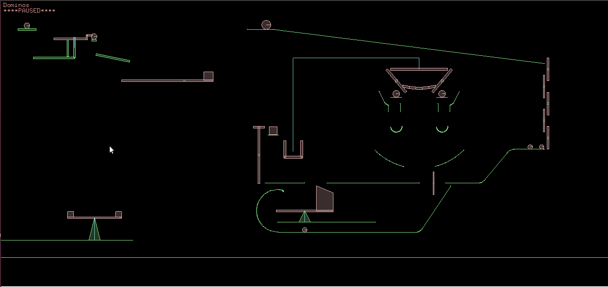
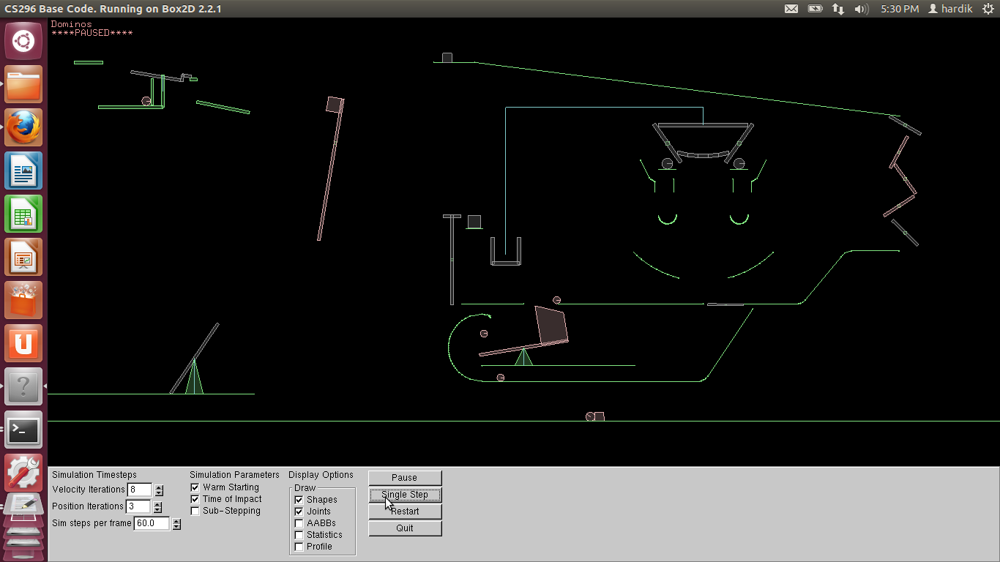
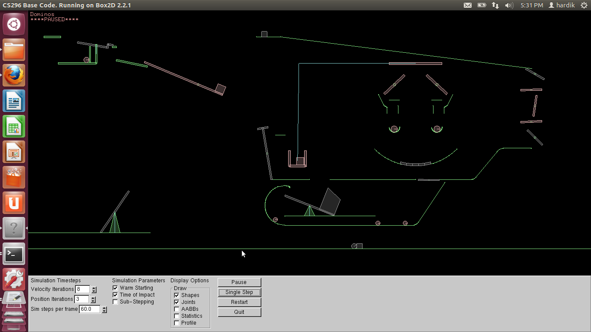
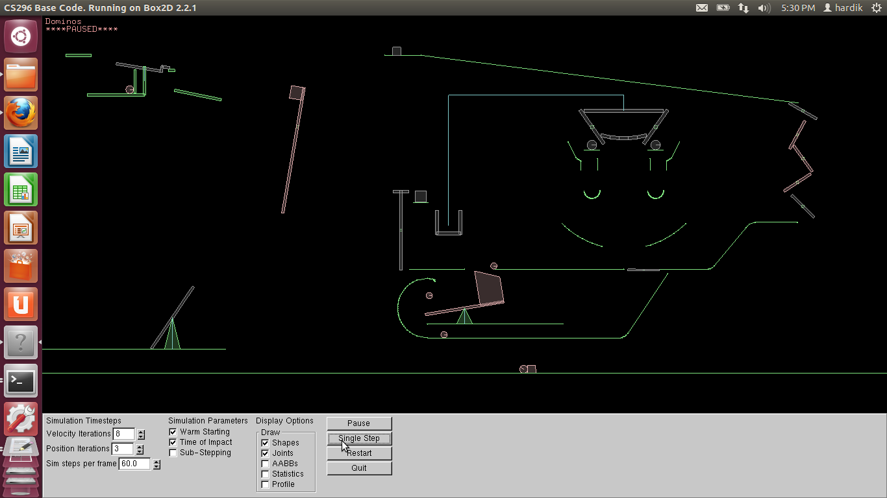
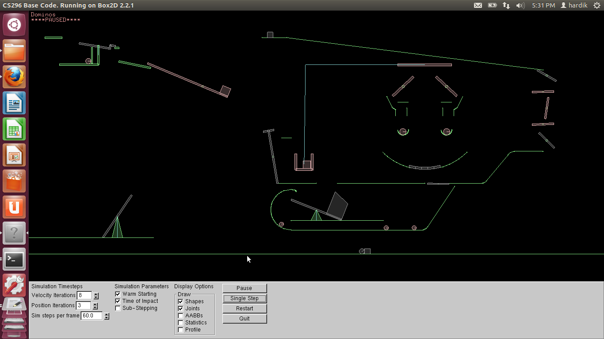

Rube Goldberg Machine Simulation using Box2D
This web-page talks about the Rube Goldberg Simulation that we did as a part of course project in CS296. We had initially designed a Rube Goldberg Machine, which we wanted to simulate on Box2D. Initial design is available here. The snapshot at the initial point of simulation is like this :-  The simulation in its intermediate stages looks like this
 
The simulation ends like this, by making a smiley :)

The project report, which talks about the interesting aspects of design, and the performance report of the code can be found here. The html version of the same report can also be accessed here .
Major references which we used during the project are :-

The simulation ends like this, by making a smiley :)

The project report, which talks about the interesting aspects of design, and the performance report of the code can be found here. The html version of the same report can also be accessed here .
Major references which we used during the project are :-
- Ofcourse Box2D
- Wikipedia page on Rube Goldberg Machine (to get to know what is it)
- Box2D editor R.U.B.E demo - Rube Goldberg machine - A youtube video
- Rube Golberg Videos - Saw a couple of videos from here
- Various references given on each lab assignment pages. All of them helped a lot in the completion of the web-page